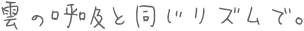

*ご挨拶 *サイトマップ・作品案内 *リンク集 *Blog
|
管理人、風野 湊（かざの みなと）への連絡はこちらからお願いします。
*一言掲示板 感想から足跡まで何でもどうぞ。返信はつきません。
*WEB拍手 いつも励みになります。ありがとうございます（´｀*）
*Twitter@feelingskyblue お返事のスピードは多分一番早いです。笑
Powered by 忍者ツールズ
文字数は1000が上限です。アドレス表記無しの場合はブログでお返事します。Special Thanks Tint Search / 文芸Webサーチ / ElDorado
当サイト上の文章・画像の無断転載はご遠慮ください。
Copylight(C)2008- Minato Kazano allrights reserved. Thanks for visiting...